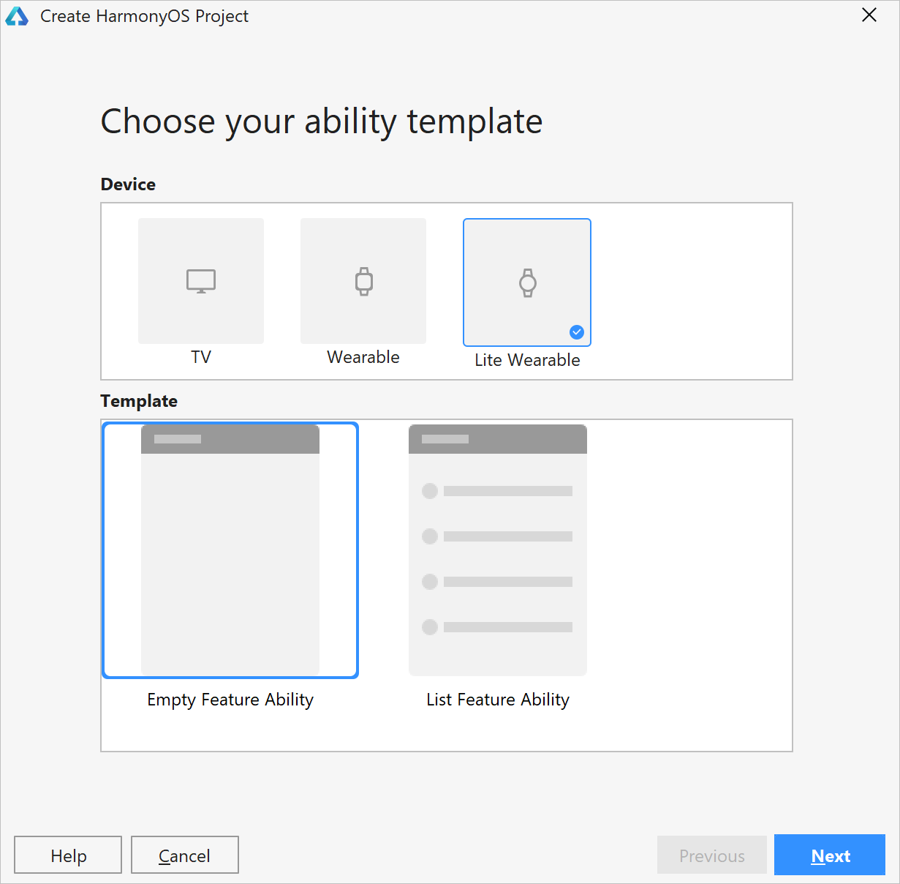
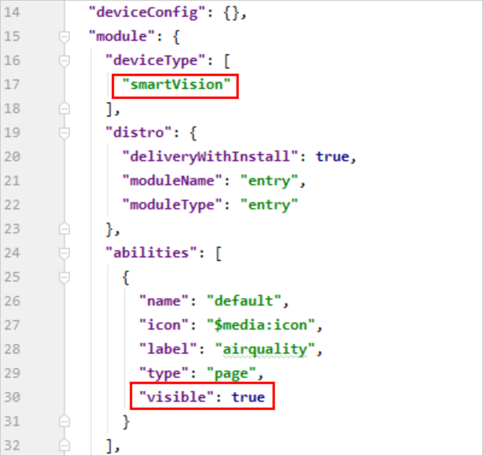

Preparations¶
Building the Development Environment¶
Set up the environment by performing operations provided in Environment Setup of the DevEco Studio User Guide.
Creating a Project¶
The DevEco Studio provides only basic development functions. GUI preview and code commissioning will be provided in the next version.
Perform the following steps to create a project. Currently, projects of the smartVision type cannot be created directly.
Start the DevEco Studio, choose File > Project and select Lite Wearable for Device and Empty Feature Ability for Template.
Figure 1 Selecting project templateAfter the creation is successful, modify the config.json file in entry > src > main.
Change the value of “deviceType” to “smartVision”.
Add the “visible” attribute to the “abilities” array and set the attribute value to true.
Figure 2 Modifying the template